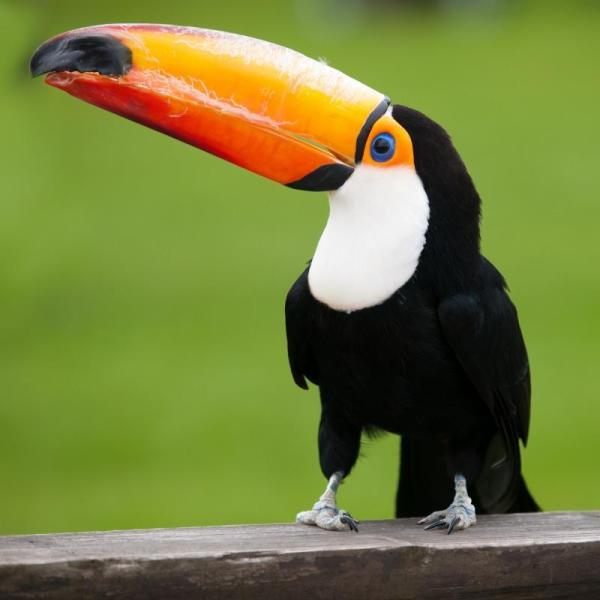

Il tucano
Il tucano è un uccello originario del Sudamerica della famiglia
dei Ramphastidae, il più delle volte chiamato semplicemente tucano.
Etimologia
Il nome tucano deriva dal termine tupi tuka, tukana, forse di origine onomatopeica.[senza fonte]
Il tucano toco è il più grande fra le 11 specie di tucani. Misura 53-60
centimetri di cui ben 19 spettano al becco; il peso si aggira sui 550 grammi.
Il piumaggio è di un bel nero brillante che fa risaltare ulteriormente
il becco arancione. Sulla sua punta è presente una macchia nera di forma
ovale. La gola è bianca. Quando è in volo si notano le copritrici rosse
della coda e il codrione bianco. Attorno agli occhi, viola o blu,
è presente una zona di pelle nuda di colore giallo-arancione.
Il becco, nonostante all'apparenza sembri molto pesante, è in realtà
cosparso di sacche d'aria che lo rendono leggerissimo. Possiede una
lunga lingua consumata ai lati. Le zampe sono grigie, corte ma molto
robuste, con due dita rivolte in avanti e due indietro per facilitare
l'appoggio sui rami.